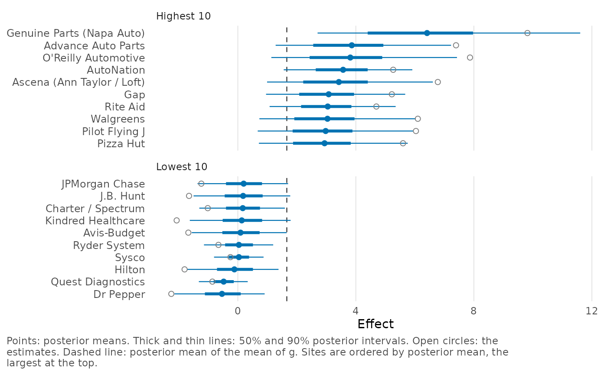
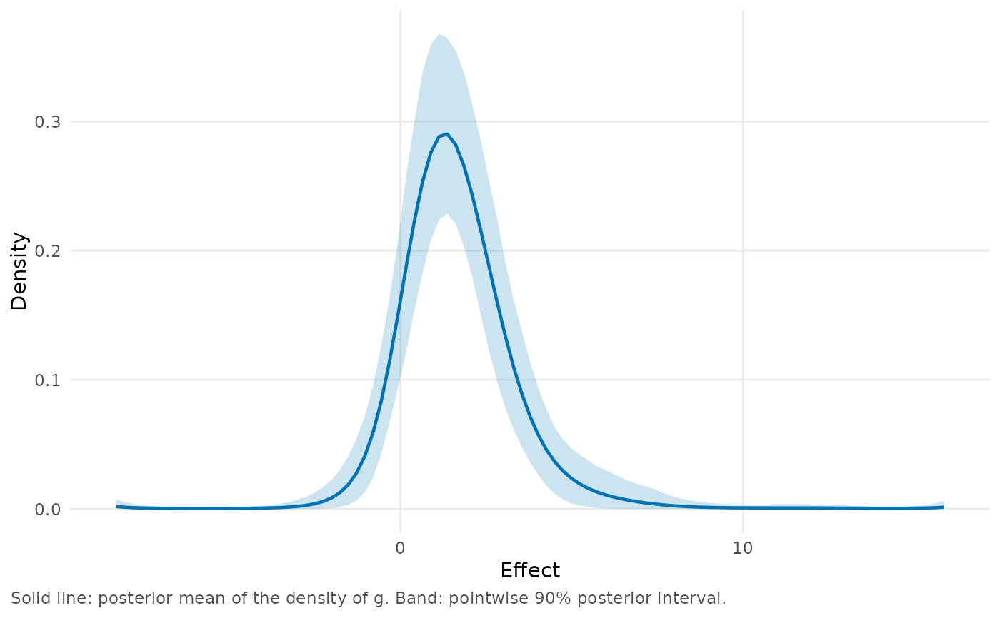
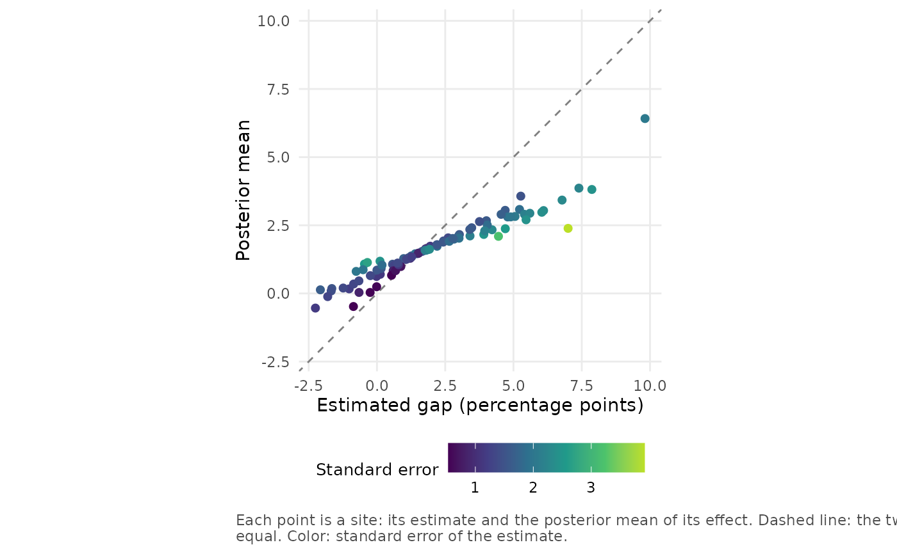

The plot() method for a fitted model shows the plot selected by
type. Each type is produced by one of the package's plot functions,
e.g., "sites" by plot_sites() and "g" by plot_g(), and further
arguments are passed on to that function. See Details for all types.
Usage
# S3 method for class 'bef_fit_re'
plot(x, type = "sites", ..., backend = NULL)Arguments
- x
A
bef_fitobject created bybayes_efron_fit().- type
The plot to show, e.g.,
"sites"(the default),"g"or"shrinkage". See Details for all types.- ...
Further arguments passed to the plot function for
type, such aslevel,sort_byorscale.- backend
Deprecated.
backend = "base"plots the types"caterpillar","g","diagnostic"and"loo"with base graphics instead of ggplot2 and issues a warning. This option will be removed.
Value
A ggplot object, which can be modified with ggplot2 functions,
e.g., by adding layers. For type = "mcmc", the value returned by
plot_mcmc(). With backend = "base", the plot is shown on the
current graphics device and NULL is returned invisibly.
Details
type can be one of the following. The help page of each function
describes the plot and its arguments.
"sites"(the default):plot_sites(), a caterpillar plot of the site effects with their posterior intervals"g":plot_g(), the estimated distribution of effects"shrinkage":plot_shrinkage(), a shrinkage plot of posterior means against estimates"exceedance":plot_exceedance(), the probability that each effect exceeds a threshold"site_posterior":plot_site_posterior(), the posterior distribution of the effect of each site specified insites"diagnostics":plot_diagnostics(), sampler and grid diagnostics"loo":plot_loo(), the Pareto k values of the sites from leave-one-out cross-validation"ppc":plot_ppc(), a posterior predictive check of the model against the estimates"mcmc":plot_mcmc(), trace plots and other plots of the posterior draws"grid":plot.bef_grid(), the grid in relation to the estimates"recovery":plot_recovery(), a comparison of the fit with the known true effects specified intruth
"caterpillar" and "diagnostic" are accepted as aliases for "sites"
and "diagnostics".
type = "g" shows the density of \(g\). To plot the probabilities of
the grid points instead, call plot_g(x, type = "mass"). Note that
their heights depend on the number of grid points.
Examples
plot(krw_fit, n_extreme = 10, scale = 100)

plot(krw_fit, type = "g", scale = 100)

plot(krw_fit, type = "diagnostics")
 # The result is a ggplot object, so labels and layers can be added.
plot(krw_fit, type = "shrinkage", scale = 100) +
ggplot2::labs(x = "Estimated gap (percentage points)")
# The result is a ggplot object, so labels and layers can be added.
plot(krw_fit, type = "shrinkage", scale = 100) +
ggplot2::labs(x = "Estimated gap (percentage points)")
